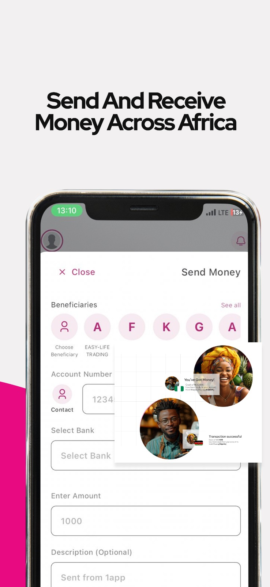
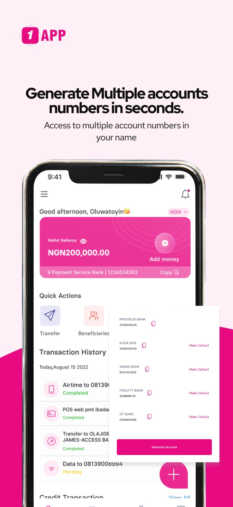

1app 深度对比：当尼日利亚本地支付都在内卷，它悄悄把路修到了二十多个国家
从跨境汇款费率到免费实体 Visa 卡，把 1app 放进尼日利亚移动支付的完整坐标系里看——它的差异化在哪里，为这些优势又付出了什么代价。
尼日利亚的移动支付赛道有多拥挤？OPay、PalmPay、Moniepoint、VFD、Rubies……每个月都有新产品冒出来，广告里喊着"零手续费转账"的口号已经不再新鲜。就在这片红海之外，1app 从第一天就选了一条不那么挤的路——跨境。
我第一次注意到这个应用是在朋友间聊"往国外汇学费怎么走最省钱"的时候。有人推银行电汇，有人提西联，有人说试试 crypto，还有人默默掏出手机打开了 1app。半年后我装来用，才发现它在本地支付的热闹边上，悄悄铺了一套完整的跨境+全球消费的基础设施。

同类格局里的位置：不是本地转账工具，是尼日利亚人走出去的钱包
先说整体坐标。OPay 们的主战场是本地转账、话费充值、商户付款，这块 1app 也做，但做得不算最激进——Google Play 上 10 万+ 下载、3.7 分，放在尼日利亚本地支付产品里属于中游。
但它真正发力的方向从命名就能看出来：1app – Global Payments for 9ja。9ja 是尼日利亚人的自称，global payments 是它的定位。这跟"一切支付都做"的 PalmPay 或"本地商户通吃"的 Moniepoint 是两种思路——它不抢本地人每天互相转那点零花钱的生意，而是盯着那些需要跨出国门的场景：
- 往欧美汇款交学费或给家人
- 订阅 Netflix、买海外 SaaS、付广告费
- 在本地能换汇的场景走体系内通道
用一句话总结：如果你只在尼日利亚境内转来转去，OPay 和 PalmPay 可能更顺手、门店更多；但一旦你需要跨境或全球消费，1app 是这套支付基础设施里最省事的选项之一。
差异化一：国际汇款的费率透明，而且真按钱包速度到账
这是我最直观的体验。传统电汇的模式大家都懂——从银行柜台填单到对方账户，25-50 美元中间行费是常规价，到账时间三到五天起步，汇率还藏在银行的点差里。我有次汇钱给英国念书的表弟，前后花了六天，中间行收了 38 英镑。
用 1app 的国际转账，流程是另一条路：
- 钱包里直接选国家 + 收款方式
- 下单页实时显示汇率 + 手续费合计，到手金额清清楚楚
- 走应用体系内通道，小额汇款到账速度以小时计
官方文档里点到的覆盖范围是 20+ 国家，欧洲、美国、非洲邻居都在里面。钱包直转适合中小额高频，比如每月给在外的家人打生活费，或者付一笔几百美元的数字课程——这些场景用银行通道既慢又贵，用 crypto 对大多数尼日利亚用户来说门槛太高，1app 刚好卡在中间。
大额购房或投资类支付它也做不了，那种场景银行电汇仍然是对的选择。但 2026 年的尼日利亚普通家庭里，谁每个月汇 5 万美元？真正高频率的是几十到几千美元的刚需，这正是它抢的市场。
差异化二：免费实体 Visa 卡——而且真的能刷，不只是个"有卡"的噱头
虚拟卡这个东西在尼日利亚已经不新鲜了，不少支付应用都在做，但用户抱怨最多的就是"申请到了但刷不了"——订阅 Netflix 被拒，付广告费被拒，海淘下单被拒。1app 的官网宣传里直接点了这个痛点："a reliable card that works"，强调的是可用性。
它的卡产品线分三类：
| 卡类型 | 币种 | 定位 |
|---|---|---|
| USD 虚拟卡 | 美元 | 海外网站消费主力 |
| NGN 虚拟卡 | 奈拉 | 本地网站在线支付 |
| 实体 Visa 卡 | 奈拉 | 线下 POS + ATM 取现 |
最打动人的是最后那张实体卡——免费申请 + 免费配送。我见过的同类产品里，实体卡普遍要收一笔工本费，从 5000 到 15000 奈拉不等，还要自己去网点取或者付配送费。1app 直接把这个门槛拿掉了，对习惯线下刷卡的用户来说，一张不用掏钱就能拿到的 Visa 卡，吸引力是实打实的。

卡管理界面也不做花架子，三个操作一目了然：Block Card（临时停用防刷）、Manage Card（管理取现渠道设置）、Request Card（申请新卡）。被盗刷先 Block，丢了补一张——这套操作逻辑跟我在欧洲用的 Revolut 没本质区别，放在尼日利亚本地支付产品里算是很成熟的设计。
差异化三：垂直场景抓得细——JAMB 考试 PIN 和 Event Ticket 是真需求
支付产品做垂直场景很容易沦为摆设——"电影票"入口点进去跳第三方链接、"水电费代缴"只覆盖一两家运营商。但 1app 文档里专门列了两个让我觉得它真的做了用户调研的入口：
- JAMB PIN：尼日利亚大学入学统一考试的注册码。这个场景的特点是"低频但生死攸关"——每年 2-3 月集中报名期，家长和考生在截止前几天才急着买，对到账速度的要求是秒级的。走银行转账排队 + 人工发 PIN 至少半小时起步，钱包余额支付是即时发码，直接解决痛点。
- Event Ticket：本地演出、聚会、体育赛事票务。同样的逻辑——热门活动开票当天几万人抢，支付通道卡住就是白跑一趟。钱包直付 + 应用内出票码核销，走的是一套完整的闭环。
这两个入口放在一起看，1app 对"紧急支付"场景的敏感度明显高于同类。OPay 们做的是"高频日常"——每天转话费、买奶茶；1app 做的是"关键时刻不能掉链子"——考试、机票、订阅、跨境汇款。
它的取舍：为这些优势付出了什么
说了这么多好的，也得讲讲代价。1app 不是没有短板，甚至某些短板刚好是它选择了跨境+全球消费路线之后必然要面对的：
第一，本地化深度不如本地支付巨头。 应用做得再好，尼日利亚的线下商户覆盖率、ATM 取现实力、社区代理网络这些，OPay 和 PalmPay 积累了好几年。如果你家附近的街头小店只收 OPay 的二维码，1app 卡再好也用不上。
第二，版本矩阵不算轻薄。 Android 主版本 76MB，最低要求 Android 7.1——放在 2026 年不算离谱，但对于尼日利亚大量用中低端手机的用户，存储空间是实打实的硬约束。Lite 版虽然也提供虚拟卡等能力，但部分功能稳定性不如主版本。主版本商店评分 3.7 分不算顶尖，Google Play 评论里也能看到关于偶发卡顿和体验不一致的反馈。
第三，跨境能力的天花板取决于它的全球账户体系。 能覆盖多少国家、汇率有多好、到账有多快，这些不是尼日利亚团队自己能决定的，要看他们背后对接的全球支付基础设施和合作银行。文档里也明确说了"国家名单、汇率与费用实时变化"——这套体系能走多远，目前还在持续扩展中。
选购结论：什么样的人选它，什么样的人选别的
最后给个明确的判断：
- 如果你在尼日利亚，核心需求是本地转账、商户付款、话费充值 → 选 OPay 或 PalmPay。门店多、代理网密、日常高频操作体验更成熟。
- 如果你在尼日利亚，需要跨境汇款、全球消费、海外订阅 → 1app 是值得装的选项。费率透明、速度够快、免费实体 Visa 卡是独一份的组合。
- 如果你两者都要 → 装 1app 当跨境主钱包，本地场景保留 OPay 或 PalmPay 当补位。两个应用不冲突，各自做自己擅长的事。
想更深入了解功能细节的话，可以翻一下 完整功能文档站，里面每个模块都有实际使用指南。应用本身可以从 官方下载入口 拿到 APK，安装包体积稍大但值得。
关于这款应用的更多资料，我整理了完整的文档档案并同步到了三个仓库方便跨平台查阅：GitHub 文档仓库、Gitee 镜像、GitCode 同步库。
一句话推荐：尼日利亚人要跨境，装 1app。